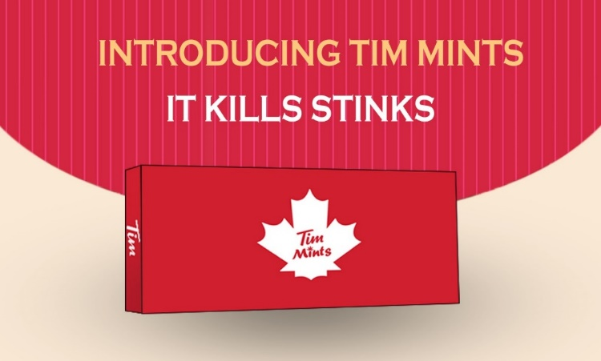

I’m Rafay, a Toronto based professional working at the intersection of marketing, operations, and team development.
My experience spans hands-on digital campaigns at FHEM, retail operations and people leadership at Glentel, and earlier work in business development and customer support. I enjoy work where understanding the customer and organizing the details matter equally.
A closer look at the campaigns, systems, and teams I’ve helped move forward.
4 projects
WORKFLOW ILLUSTRATION
Immigro / Campaign journey
immigro↗YOUR NEXT CHAPTERA new path. A clear first step.
Book a consultation ↗◎
Ad → Landing page → Enquiry
FHEM / IMMIGROMarketing
One connected lead journey.
Campaign planning, paid search, and a landing page built around a clear next step.
WORKFLOW ILLUSTRATION
District overviewFrom activity to clarity
•••
CONNECTED LOCATIONS~15↗
GLENTEL / DISTRICT INITIATIVESOperations
Clarity across locations.
Excel reporting and coordinated follow-up across approximately 15 retail locations in the Toronto region.
WORKFLOW ILLUSTRATION
0102030405
Better, together.
Clear expectations. Consistent support.
Onboard→Coach→Develop
GLENTEL / PEOPLE DEVELOPMENTLeadership
Performance starts with people.
Interviewing, hiring, coaching, and daily support for a team of approximately five sales professionals.
WORKFLOW ILLUSTRATION
Reach the right people.
01
TargetRelevant roles and audiences
02
ConnectClear copy and application journeys
03
OrganizeCandidate and contact records
FHEM / RECRUITMENT & CRMMarketing + Operations
Relevant reach. Organized follow-up.
Recruitment marketing, candidate sourcing, and structured B2B contact management.
Project visuals illustrate my workflows. They are not screenshots of company systems.
04 / ACADEMIC PROJECTS
Where the thinking started.
Two projects connecting my business education with research and marketing practice.
MARKET RESEARCH
Understanding the PC buyer.
Compared assembled and pre-built PCs through buyer and seller research, exploring purchasing preferences, product positioning, and value.
Bachelor of Business AdministrationOsmania University
MARKETING CAPSTONE

Tim’s Mints
A proposed mint candy for Tim Hortons cafés, designed to freshen breath after coffee. Developed a marketing plan covering market analysis, pricing, positioning, promotion and Canva creative.
Postgraduate Marketing Management & Professional SalesLambton College in Toronto
LET’S CONNECT
Good work starts with a conversation.
Have an opportunity in operations, marketing, or team leadership? I’d love to hear about it.